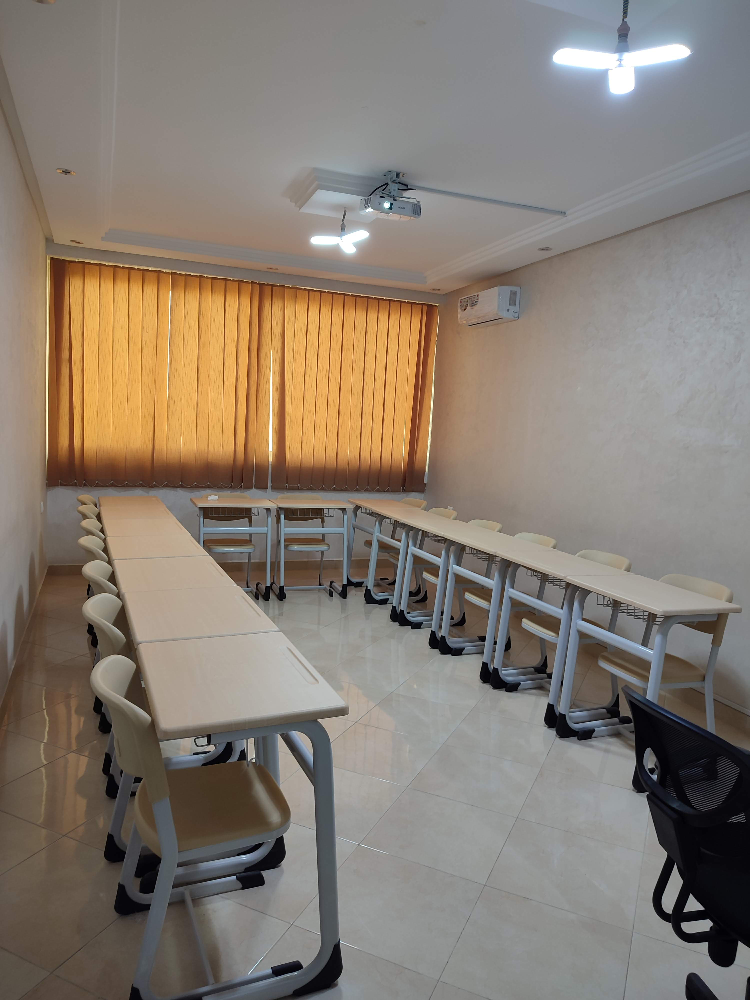
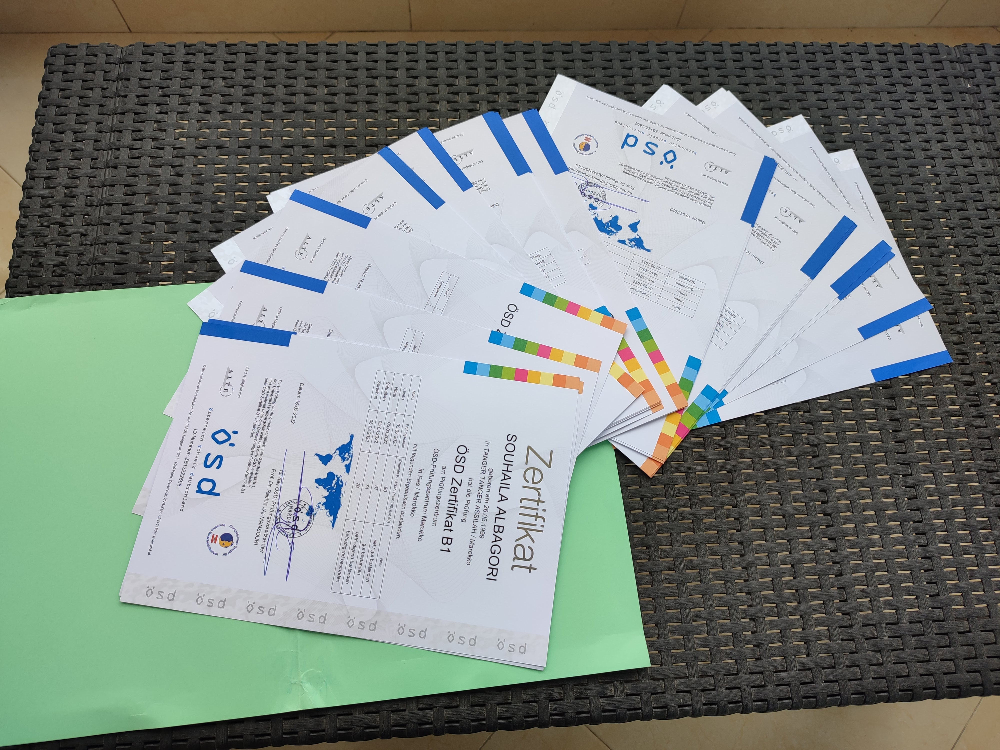

دورات اللغة الألمانية - مركز DUDEN-SDL
مرحبًا بكم في مركز DUDEN-SDL للغة الألمانية! نقدم مجموعة متنوعة من الدورات التي تناسب احتياجاتكم ومستوياتكم المختلفة، سواء كنتم مبتدئين أو تبحثون عن تحسين مهاراتكم الحالية. نقدم لكم دورات لجميع المستويات من A1 إلى C1. تعرفوا على تفاصيل الدورات التي نقدمها:
دورات جد مكثفة

المواعيد: خمس حصص في الأسبوع، كل حصة مدتها ثلاث ساعات
تعد الدورة الجد مكثفة الخيار الأمثل للطلاب الذين يرغبون في تعلم اللغة بسرعة وفي وقت قصير. هذا البرنامج مصمم ليمنحكم تجربة تعليمية مركزة ومكثفة تساعدكم على تحقيق تقدم سريع وملحوظ في مهارات اللغة الألمانية.
دورات مكثفة
المواعيد: خمس حصص في الأسبوع، كل حصة مدتها ساعتين
صممت هذه الدورة لتناسب الطلاب الذين يرغبون في تعلم اللغة الألمانية بوتيرة مكثفة لكن مع وقت دراسة أقل مقارنة بالدورات الجد مكثفة.
دورات عادية
المواعيد: ثلاث حصص في الأسبوع، كل حصة مدتها ساعتين ونصف
تقدم الدورات العادية توازناً ممتازاً بين التعلم المكثف والوقت المتاح للطلاب. هذه الدورات مثالية للطلاب الذين يرغبون في تحسين مهاراتهم اللغوية دون التضحية بالكثير من الوقت الشخصي أو المهني.
دورة الشيفت
المواعيد: سواء ثلاث مرات أو خمس مرات في الأسبوع
صممت هذه الدورة لتلائم توقيت الطلية الذين يشتغلون بنظام الشيفت، حيث تتيح لهم هذه الدورات امكانية تعلم اللغة الألمانية صباحا او مساء بتوقيت مكيف مع النظام الشيفت الاسبوعي او اليومي. إذ يمكنهم أن يستفيدوا من نفس الحصة مع نفس الأستاذ حسب التوقيت المناسب لهم.
دورات نهاية الأسبوع
المواعيد: حصص خاصة بأيام نهاية الأسبوع
تعتبر دورات نهاية الأسبوع مثالية للأشخاص الذين لديهم جداول عمل مزدحمة خلال الأسبوع. توفر هذه الدورات مرونة كبيرة وتمكنكم من تعلم اللغة الألمانية في أوقات الفراغ خلال عطلة نهاية الأسبوع.
دورات متخصصة لتعلم اللغة الألمانية التقنية
موجهة بالأساس للشركات لتلبية احتياجاتها لتكوين موظفين متعددي المهارات اللغوية لتسهيل التواصل بينهم وبين شركائهم من دول أخرى. هذه الدورات يمكن لأساتذتنا الانتقال إلى الشركة لتقديم الحصص، مما يوفر على المستخدمين الوقت والجهد.
دورات لتعلم اللغة عن بعد
تمكنكم هذه الدورة من حضور الدروس عبر الإنترنت من أي مكان وفي أي وقت يناسبكم، مما يتيح لكم التوفيق بين التعلم والالتزامات الأخرى. توفر لكم هذه الدورة منهجية تعليمية تفاعلية بتقنيات تعليم متقدمة لضمان تجربة تعلم فعالة وممتعة، كما أنكم تستفيدون من دعم مباشر من المعلمين خلال كل وقت.
دورات للتحضير لامتحانات اللغة
نقدم دورات شاملة للتحضير لامتحانات اللغة الألمانية، مخصصة لجميع المستويات (A1، B1، B2، C1). تُصمم هذه الدورات بعناية لتلبية احتياجات الطلاب الذين يطمحون لاجتياز الامتحانات المعترف بها دولياً. نقدم تدريباً مكثفاً وشاملاً للامتحانات التالية: (Goethe-Zertifikat,ÖSD,TELC,ECL) تتضمن دوراتنا ممارسات عملية وتدريبات على جميع المهارات اللغوية (القراءة، الكتابة، الاستماع، والمحادثة)، بالإضافة إلى استراتيجيات فعالة لإدارة الوقت خلال الامتحانات والتعامل مع أنواع الأسئلة المختلفة. نحن هنا لمساعدتك على تحقيق أهدافك اللغوية بأفضل النتائج الممكنة.